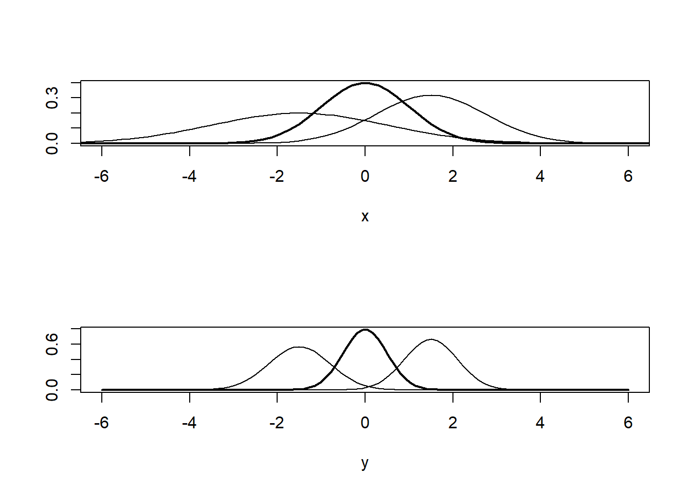

5 Harjoituskerta 5
| Osa | Käsiteltävät asiat (viitteellinen asiasisältö, muutoksia voi tulla) |
| 1 | RStudioon ja R-kieleen tutustuminen |
| 2 | Aineiston kuvailu: frekvenssijakauma, tunnusluvut, kuviot, osa-aineiston poimiminen ja aineston ryhmittäinen tarkastelu |
| 3 | Yksinkertaiset muuttujamuunnokset, kahden muuttujan välinen yhteisvaihtelu, ristiintaulukointi |
| 4 | Korrelaatiot ja hajotakuvio, summamuuttujan tekeminen |
| 5 | Keskiarvotestit: t-testi ja ANOVA |
| 6 | Kertausta ja ohjausta ryhmätehtävään |
5.2 Keskiarvotestit
Keskiarvotestit on jaoteltavissa tarkasteltavien ryhmien määrän mukaan: * Yksi → yhden otoksen t-testi * Kaksi → riippumattomien otosten tai toistettujen mittausten t-testi * Monta → ANOVA
Riippumattomien otosten t-testi käytetään, kun halutaan tutkia, eroavatko kahden toisistaan riippumattoman ryhmän keskiarvot toisistaan (perusjoukossa) (Nummenmaa 2009, 175). Riippuvat otokset = samoja henkilöitä on mitattu kaksi eri kertaa Tällöin riippumattomien otosten t-testi testaa hypoteesia “ryhmien keskiarvot ovat samat” ja vastahypoteesi on muotoa “ryhmien keskiarvot eroavat toisistaan”. Oletukset: Selitettävän muuttujan tulee olla vähintään välimatka-asteikollinen Riippuvan muuttujan jakaumat molemmissa ryhmissä noudattavat normaalijakaumaa Ekstraa: normaalisuustesti SPSS:ssä (ks.
Otoskoon tulee olla riittävän suuri (yli 30) Riippuvan muuttujan varianssit ovat yhtä suuret (lähellä toisiaan) → Levenen testi
5.3 Levenen testi
Muuttujien varianssi voi vaihdella ryhmien välillä. Jos varianssi on suurta, keskiarvon erojen tulkinta on vaikea. Seuraavassa kuviossa on pyritty havainnollistamaan tätä. Ensimmäisessä kuviossa varianssit ovat suurempia ja on vaikea sanoa, eroavatko esimerkiksi sinisen ja vihreän jakauman keskiarvot toisistaan. Alemmassa kuviossa on samat keskiarvot, mutta pienempi varianssi. Kuviosta nähdään välittömästi, miten keskiarvot eroavat toisistaan.
x <- seq(-10, 10, length = 100)
par(mfrow = c(2, 1))
plot(x, dnorm(x, mean = 0, sd = 1),
type = "l",
lwd = 2,
ylab = "",
xlim = c(-6, 6))
lines(x, dnorm(x, mean = 1.5, sd = 1.25))
lines(x, dnorm(x, mean = -1.5, sd = 2))
y <- seq(-6, 6, length = 100)
plot(y, dnorm(y, mean = 0, sd = 0.5),
type = "l",
lwd = 2,
ylab = "",
xlim = c(-6, 6))
lines(y, dnorm(y, mean = 1.5, sd = 0.6))
lines(y, dnorm(y, mean = -1.5, sd = 0.7))
Tästä syystä ennen keskiarvotestejä tehdään Levenen testi, jolla selvitetään, eroavatko keskiarvot toisistaan. Tarkastellaan seuraavaksi, onko naisten ja miesten kokemassa onnellisuudessa eroja. Ensin tehdään Levenen testi, jonka perusteella valitaan sopiva t-testi.
leveneTest(ess$c1 ~ ess$sukupuoli)## Levene's Test for Homogeneity of Variance (center = median)
## Df F value Pr(>F)
## group 1 1.5516 0.2131
## 1920Testin p-arvo on 0.21 eli reilusti yli halutun 0.05 rajan. Testi ei siis
anna syytä hylätä nollahypoteesia (= variansseissa ei ole eroa), jonka
mukaan varianssit eivät eroa toisistaan, joten tehdään t-testi pitäen
variansseja yhtäsuurina. Testin peruskomento on t.test(x, y).
c1f <- ess$c1[ess$sukup == 1]
c1m <- ess$c1[ess$sukup == 2]
t.test(c1f, c1m, var.equal = TRUE)##
## Two Sample t-test
##
## data: c1f and c1m
## t = -4.2514, df = 1920, p-value = 2.226e-05
## alternative hypothesis: true difference in means is not equal to 0
## 95 percent confidence interval:
## -0.4066461 -0.1499046
## sample estimates:
## mean of x mean of y
## 8.005214 8.283489Jos ryhmien arvoja ei halua erotella omiksi muuttujikseen, testi voidaan
tehdä myös komennolla
t.test(ess$c1[ess$sukupuoli == 1], ess$c1[ess$sukupuoli == 2], var.equal = TRUE).
5.3.1 Hauskaa R:llä
Seuraavalla koodilla simuloidaan aineisto kahdesta ryhmästä (n = 20), joiden keskiarvot ovat 100 ja 110. Samalla tehdään t-testi, jolla testaan erojen tilastollista merkitsevyyttä.
n <- 10
parvo <- numeric(1000)
for (i in 1:1000) {
dist1 <- data.frame(
ao = rnorm(n, 100, 15),
luokka = as.factor(rep(1, n))
)
dist2 <- data.frame(
ao = rnorm(n, 110, 15),
luokka = as.factor(rep(0, n))
)
distribution <- rbind(dist1, dist2)
test <- t.test(distribution$ao ~ distribution$luokka)
parvo[i] <- test$p.value
}5.4 Yksisuuntainen varianssianalyysi eli ANOVA
Varianssianalyysillä voidaan tutkia, onko selitettävän muuttujan keskiarvot tilastollisesti merkitsevästi erisuuruisia selittävän muuttujan eri luokissa. Yksisuuntaista varianssianalyysia (ANOVA) käytetään, kun tarkasteltavia ryhmiä on enemmän kuin kaksi (= monta) ja selitettävästä muuttujasta tulee voida järkevästi laskea (aritmeettinen) keskiarvo. ANOVAssa on vain yksi selittävä muuttuja, joka kuvaa havaintoyksikköjen jakautumista luokkiin.
Varianssianalyysin nollahypoteesi on, että ryhmien keskiarvot (populaatiossa) ovat samat. Vastahypoteesi on useimmiten muotoa “joidenkin ryhmien välillä on eroa”. Jos verrattavista ryhmistä jonkun keskiarvo poikkeaa muista, tehdään (suunniteltuja) kontrastivertailuja tai käytetään (suunnittelemattomia) Post Hoc -testejä sen selvittämiseksi, mitkä ryhmäkeskiarvot poikkeavat toisistaan. Post Hoc -testejä käytetään, jos ei ole ennakkotietoa siitä, mitkä ryhmät eroaisivat toisistaan. Kontrastivertailuja kannattaa käyttää, jos ennakkokäsitys on.
Yksisuuntaisessa varianssianalyysissa on kolme vaihetta:
- Ryhmien varianssin tarkastelu
- Jos varianssit eivät eroa ryhmien välillä, siirrytään tulosten tulkintaan
- Jos varianssit eroavat ryhmien välillä, tehdään Brown-Forsythe-testi, jonka jälkeen siirrytään tulosten tulkintaan
- Testataan, onko ryhmien keskiarvoissa eroa
- Jos ANOVAn (tai Brown-Forsythe –testin) tulos p < 0.05, nollahypoteesi hylätään ja päätellään, että ryhmäkeskiarvoissa on eroa
- Jos kyllä: testataan post hoc -testeillä, minkä ryhmän/ryhmien välillä eroa on
5.4.1 Harjoitus: Poliittinen orientaatio ja työttömien elintavat
Tarkastellaan seuraavaksi, eroavatko poliittisen vasemmiston, keskustan ja oikeiston käsitykset työttömien elintavoista toisistaan. Jaotellaan ensin poliittinen orientaatio (b26) kolmeen luokkaan.
ess$e5[ess$e5 == 99] <- NA
ess$politik <- cut(ess$b26, breaks = c(0, 2, 7, 10), labels = c("Vasemmisto", "Keskusta", "Oikeisto"), include.lowest = TRUE)Seuraavaksi tarkastellaan ryhmien välisiä variansseja Levenen testillä.
leveneTest(ess$e5 ~ ess$politik, center = "mean")## Levene's Test for Homogeneity of Variance (center = "mean")
## Df F value Pr(>F)
## group 2 3.1002 0.04527 *
## 1853
## ---
## Signif. codes: 0 '***' 0.001 '**' 0.01 '*' 0.05 '.' 0.1 ' ' 1Levenen testin mukaan varianssit eroavat toisistaan, joten teemme ANOVAn sen mukaisesti. Malli tallennetaan omaksi “muuttujaksi”, jotta sitä voidaan käyttää mahdollisissa post hoc -testeissä.
malli <- oneway.test(ess$e5 ~ ess$politik, var.equal = FALSE)
print(malli)##
## One-way analysis of means (not assuming equal variances)
##
## data: ess$e5 and ess$politik
## F = 24.628, num df = 2.00, denom df = 297.55, p-value = 1.266e-10Keskiarvoissa on testin mukaan eroja, joten seuraavaksi tarkastellaan parittaisia eroja.
pairwise.t.test(ess$e5, ess$politik, p.adj = "bonf")##
## Pairwise comparisons using t tests with pooled SD
##
## data: ess$e5 and ess$politik
##
## Vasemmisto Keskusta
## Keskusta 2.6e-06 -
## Oikeisto 5.9e-12 1.0e-05
##
## P value adjustment method: bonferroniTulosten mukaan kaikkien luokkien keskiarvot eroavat toisistaan tilastollisesti merkitsevällä tavalla.